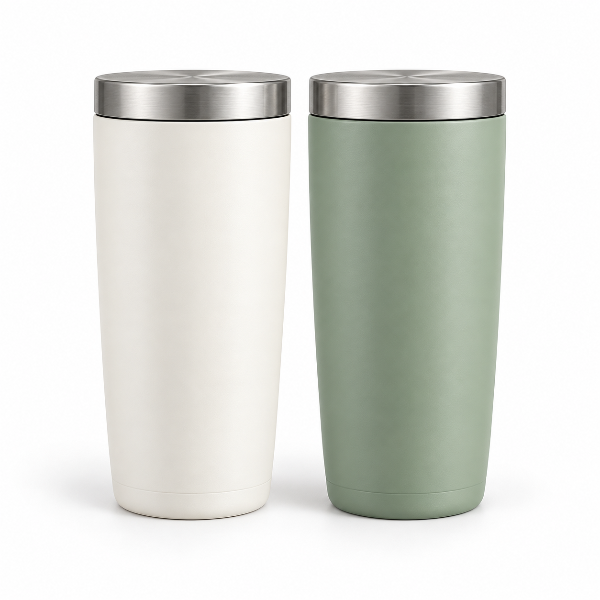
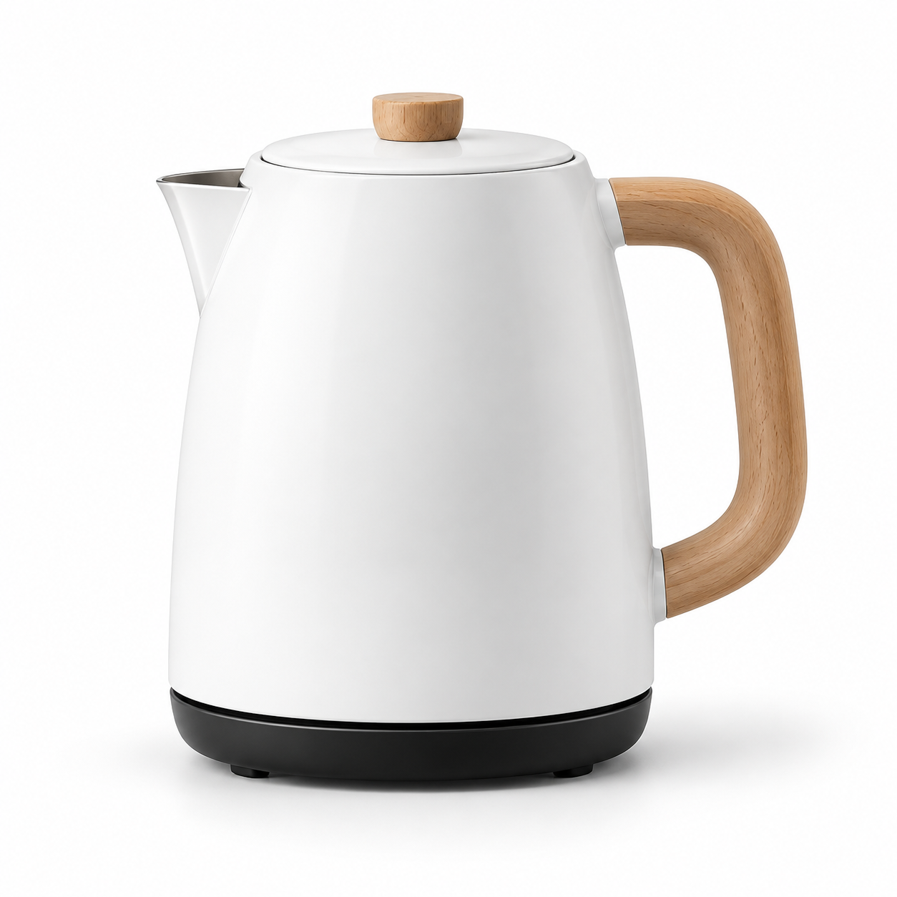

取得商品圖
取得商品展示所需的圖片素材。
E-commerce visual automation
前台網頁的指定商品展示區塊，需要一張能襯托商品的背景圖。這個 FastAPI service 分析商品圖片的代表色，從預先準備的背景圖庫選出合適圖紙，供前台組裝展示。
專案角色我負責實作自動配圖服務，將圖片分析與背景挑選整合成前台可使用的功能。


服務把圖片輸入、背景挑選與前台使用串成一條流程，讓指定展示區塊能取得合適的背景圖紙。
取得商品展示所需的圖片素材。
服務依商品圖片的色彩特徵，從預先整理的背景圖庫挑選圖紙。
將配圖結果提供給指定商品展示區塊使用。
左右兩個商品主圖放在同一張背景紙上，呈現前台指定區塊的構圖。圖片皆為新生成的示意素材；點選圖紙可比較效果，這裡不會呼叫服務重新選圖。
demo-blue.png原服務會依圖片色彩自動挑選；這組按鈕僅用來查看不同圖紙的視覺效果。
實作重點是讓選圖能力能被前台穩定使用，也讓背景素材變更時有明確的更新方式。
由服務端處理圖片分析與背景挑選，讓前台專注於展示。
預先處理背景圖資料並搭配快取機制，減少每次請求的重複運算，讓平均回應時間維持在 400 ms 以內。
建立背景素材更新與處理紀錄機制，方便維運。
服務負責圖片分析與背景挑選，前台則使用配圖結果完成展示。
將圖片色彩分析與背景挑選整合為獨立服務，供商品展示流程使用。
背景素材變更時可更新服務使用的圖庫資料，並追蹤處理狀態。
本頁預覽使用 6 張新生成的示意圖。